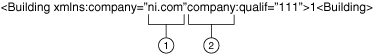
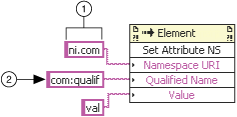

Short Name: Set Attribute NS
Requires: Base Development System
Class: Element Methods
Adds a new attribute. If an attribute with the same local name and namespace URI already exists on the element, the prefix of the existing element changes to the prefix part of the qualified name indicated in the Qualified Name parameter, and its value changes to the value indicated in the Value parameter.
For example, if you have the following existing line of code:
|  |
| 1��Namespace�� |
| 2��Prefix�� |
and use the Set Attribute NS method with the parameters below
|  |
| 1��Namespace�� |
| 2��Prefix�� |
The resulting text is:
<Building xmlns:com="ni.com" com:qualif="val" xmlns:company="ni.com">1</Building>
In the result text, the prefix of the attribute qualif changed from company to com.
If either the namespace or attribute name do not match, the method adds an entirely new attribute in the resulting text.
| Name | Type | Direction |
|---|---|---|
| Namespace URI | string | in |
| Qualified Name | string | in |
| Value | string | in |